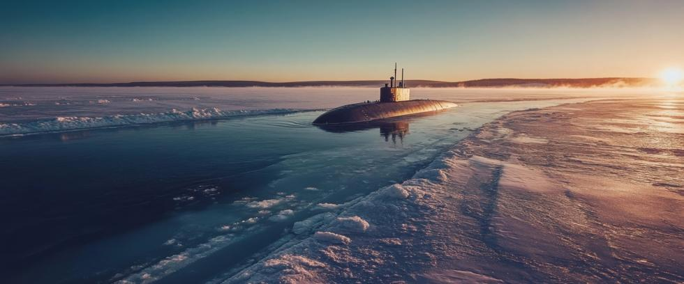

In the ever-evolving nuclear arms race, Russia has unveiled a weapon so devastating, so unconventional, that it defies everything we thought we knew about deterrence. Named after the Greek God of the sea, Poseidon is a nuclear-powered, nuclear-armed, and completely autonomous underwater drone with essentially unlimited range. Analysts call it “the Doomsday Torpedo” for good reason: It’s designed to spread radioactive materials over such large areas that entire countries could be rendered uninhabitable for years to come.
This is not science fiction. Poseidons are real. They are here now. The implications are staggering.
Unlike traditional ballistic missiles, which may be tracked and sometimes shot down, Poseidon travels far beneath the sea, undetectable, unstoppable, and capable of delivering death without warning to coastlines and inland waterways worldwide. Then comes the bad news.
A Weapon Designed to Evade and Annihilate
The inspiration for Poseidon came from a US nuclear test in the Marshall Islands in 1946. “Baker Shot” detonated a basic atomic bomb 90 feet underwater to see how it affected some old ships anchored near Bikini Atoll. No one who saw the giant geyser erupt from the ocean ever forgot it.
But the following sight was impressive as well – a dark cloud of radioactive steam that spread out over the ocean to swallow the test fleet whole. Many sailors were overexposed to radiation while decontaminating those ships, but the test did provide some answers: Surface targets could be contaminated to a point beyond habitation with radioactive steam from underwater nuclear explosions.
Poseidon is not a conventional weapon by any standards. It can travel thousands of miles autonomously at depths exceeding 3,000 feet. It doesn’t rely on human input once launched. It doesn’t need a satellite signal. It doesn’t follow a predictable trajectory. But it may be the most cost-effective nuclear weapon. There is no crew to feed. No life support systems to build and maintain.
In stealth mode, Poseidon can glide past sonar nets undetected. In attack mode, it can deliver a 100 megaton thermonuclear warhead, equalling 6,000 times the power of the Hiroshima bomb. Cheap by comparison to ICBMS, Poseidons don’t need boats. They can be launched in numbers directly from Russia’s coast to flood the world’s oceans with hundreds, or even thousands, of nuclear torpedo drones.
This is more than a new kind of weapon in the struggle for strategic dominance. Poseidon can destroy entire continents by poisoning the land and water they are made of. It could be a weapon of mass extinction, considering that radiation levels in some places where nuclear testing was done in the Marshall Islands still exceed 1,000 times the concentrations found at Chernobyl or Fukushima today.
Escalation Without Warning
Nuclear counterstrike procedures usually follow a predictable logic: launch detection, early warning, possible interception, and potential retaliation. But Poseidon ignores all that. Warning, interception, and retaliation all depend upon successful detection happening first – the very thing Poseidon eludes.
But even more troubling may be the drone’s autonomous nature. Poseidon is AI-enabled, allowing it to navigate independently and, if necessary, make real-time nuclear war decisions. Once deployed, human input is not required – a chilling departure from Cold War deterrence systems, where human judgment was usually the ultimate safeguard.
Unstoppable Equals Destabilizing
The Cold War doctrine of Mutually Assured Destruction (MAD) rested on the belief that no rational actor would initiate a nuclear war because they themselves would be destroyed by a nuclear counterstrike. The reliability of that argument was always questionable, but Poseidon further blurs the boundaries between rational deterrence and strategic aggression.
Russia claims Poseidon is meant to counter US missile defense programs and NATO's growing presence near its borders. But the weapon’s design is more sinister than that. Poseidon is clearly a first-strike platform, capable of delivering decisive blows to unsuspecting opponents.
The fact that Poseidon is essentially unstoppable also makes it more destabilizing. Its very existence discredits whatever logic the doctrine of MAD once relied upon.
Nuclear Strategy in the Age of Automation
Poseidon also marks a shift toward automated combat in which machines, not humans, make life-or-death decisions. This is a new kind of warfare, where moral concerns are being upstaged by computer codes, early warning sensors, and algorithmic calculations.
What if Poseidon malfunctions? Any machine can break down. What if complex data is misinterpreted due to technical issues? These are not theoretical questions. With weapons so powerful and simultaneously so autonomous, the possibility of error itself is an existential threat. But how can we eliminate the possibility of error?
There are legal ramifications to Poseidon as well. The drone’s purpose is to spread radioactive contamination over vast areas of land without precise control over who the radiation affects. Basic questions of international law are raised to the point that, from a legal standpoint, Poseidon may be a nuclear war crime waiting to happen.
Torpedo Drones for Everyone?
The international response to Poseidon so far has been muted. World leaders have expressed concern, but no attempts have been made to ban, limit, or monitor autonomous nuclear weapons systems. To the contrary, North Korea unveiled a copycat drone that cruised around underwater for two days before exploding in a carefully staged media event.
However, history reveals that unchecked advancements in warfighting technology eventually do get used. Poseidon’s very presence – even in peacetime – involves an element of risk. Every naval deployment, every submarine patrol, every coastal exercise must now assume that a deadly predator they cannot detect is lurking somewhere nearby, poised to strike at any moment.
The Path Forward
At Our Planet Project Foundation, we believe that citizens of the world have the power to stop weapons like Poseidon. The fact that such a device even exists at all should concern everyone who believes that life is a gift to be nurtured, not gambled with.
Nuclear weapons cannot be reliably controlled, but they can be reliably eliminated. Three out of four people on Earth support that goal, but they must be given a chance to act on their convictions. If organized as voters, they would be the strongest political force ever assembled.